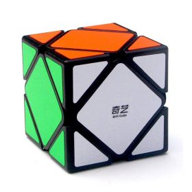

Welcome to Rubiko-kubas
RUBIK´S Rubiko kubas „Spalvų blokas“ - xszaislai.lt
2020.10.29 03:53+370 610 22600 (I-V: 9-17 val.)
Parašykite mums
Žaislai Prisijungti / RegistruotisSveiki atvykę į „XS Žaislai“
PrisijunkitePrisijungti per Facebook
Neturite paskyros?
RegistruokitėsRegistruotiems vartotojams - net 10 % nuolaida nenukainotoms prekėms
Prekių krepšelis Prekių krepšelis Prekės Pasiruošk Helovinui! Kalėdinės prekės Laikas į mokyklą! Lėlės Baby Born Baby Annabell Berjuan L.O.L. Rainbow High Kindi Kids Frozen Disney Princess Barbie Harry Potter Our Generation Shibajuku Enchantimals Lori Na!Na!Na! Fantasy Patrol Kitos lėlės Herojai Avengers Baby Shark Bakugan Cars Dragons Frozen Harry Potter KID-E-CATS Littlest Pet Shop Metalions Minions Monkart My Little Pony Oddbods Paw Patrol Peppa Pig Pepė Ilgakojinė PJ Masks Poli Robocar Polly Pocket Pokemon Power Rangers Scooby Doo Shopkins Spider- Man Star Wars Super Wings Transformers Tobot Trolls 44 CATS Lotte Kiti herojai Kompiuterinių žaidimų herojai Roblox Minecraft Fortnite LEGO LEGO ARCHITECTURE LEGO ART LEGO BOOST LEGO CITY LEGO CLASSIC LEGO CREATOR LEGO DISNEY PRINCESS LEGO DOTS LEGO DUPLO LEGO FRIENDS LEGO HARRY POTTER LEGO HIDDEN SIDE LEGO MINECRAFT LEGO MINIFIGURES LEGO MINIONS LEGO MINDSTORMS LEGO NINJAGO LEGO SPEED CHAMPIONS LEGO STAR WARS LEGO SUPER HEROES LEGO SUPER MARIO LEGO TECHNIC LEGO TROLLS LEGO IDEAS Konstruktoriai LEGO Playmobil Magformers Engino Mega bloks Simba Geomag Crayola Building Blocks Žaisliniai ginklai Nerf šautuvai, ginklai Nerf šoviniai ir priedai Šautuvai ir lankai Vandens šautuvai Kolekcinės figūrėlės Schleich Sylvanian Families Monchhichi BT21 Lundby Funko Interaktyvūs ir muzikiniai žaislai Robotai Gyvūnai Kiti žaislai Muzikiniai žaislai, instrumentai Pliušiniai žaislai Scruff A Luvs Disney Nici Peppa Pig Bukowski TY Trudi Keel Toys Orange Toys Gund Gipsy Toys Doudou Kiti Transporto priemonės Mašinėlės ir modeliai Radijo bangomis valdomi modeliai Dronai Garažai, trasos ir žaidimų rinkiniai Bruder Kosmosas Kitos transporto priemonės Kūrybiniai rinkiniai Play-Doh plastilino rinkiniai Lipdymo rinkiniai Kinetinis smėlis Antspaudukai Albumai 3D piešimo priemonės Papuošalai ir kiti aksesuarai Moksliniai ir eksperimentų rinkiniai Slimy Kiti rinkiniai Žaislai mažyliams Barškučiai, kramtukai Mediniai žaislai Lavinamieji žaislai Vandens žaislai Paspiriamos mašinėlės, stumtukai Žaidimai ir dėlionės Stalo žaidimai Beyblade Spinner M.A.D. Lavinamieji žaidimai Dėlionės mažiesiems Dėlionės iki 300 det. Dėlionės nuo 500 iki 1000 det. Dėlionės nuo 1500 iki 6000 det. 3D dėlionės Kiti žaislai ir prekės Sezoninės prekės Aksesuarai Vaikiška kosmetika Sporto prekės Vaikiški stalo reikmenys ir tekstilė Papuošalai Šventinė atributika Vaikiški baldai, palapinės Profesiniai rinkiniai Virtuvės įranga ir maistas Karnavaliniai drabužiai ir grimas Žaisliniai buities reikmenys Paspirtukai, triratukai Figūrėlių rinkiniai Elementai Įvairios Mokyklinės prekės Kuprinės vaikams Kanceliarinės prekės TOP PREKĖS LEGO HIDDEN SIDE Jack paplūdimio bagis 70428 15,39 € LEGO HIDDEN SIDE Sveiki atvykę į „Hidden Side“ 70427 15,39 € RUBIES Drakulos kostiumas, S dydis 29,99 € RUBIES Klouno kostiumas su burbuliukais, S dydis 23,99 € NICI Advento kalendorius 14,99 € PLAYMOBIL Advento kalendorius 70187 24,79 € JOKER SLIMY Advento kalendorius 27,99 € BRIO Advento kalendorius 2020 28,79 € NICI Pieštukinė „Elniukas“ 4,99 € SES Zigzaginės žirklutės 9,49 € IQ LEGO STATIONERY Geliniai rašikliai, 3 vnt. 11,99 € IQ LEGO STATIONERY Žymekliai, 3 vnt. 10,99 € ZAPF BABY BORN advento kalendorius 45,59 € ZAPF BABY BORN kūdikis-siurprizas 17,99 € ZAPF BABY BORN interaktyvi lėlė su džinsine apranga, 43 cm 64,99 € ZAPF BABY ANNEBELL interaktyvi lėlė, 43 cm 79,99 € PAW PATROL figurėlė Hero Pup, asort. 9,99 € HASBRO MY LITTLE PONY EG DOLLS Rinkinys „Magiškasis veidrodis“ 22,99 € MATTEL TOY STORY pagrindinis personažas 13,99 € TREFL 100 det. dėlionė „Keršytojai“ 4,49 € LEGO DUPLO Skaičių traukinys 10847 19,99 € LEGO ARCHITECTURE London 21034 49,99 € LEGO ARCHITECTURE Dubajus 21052 74,99 € LEGO ARCHITECTURE Tokijas 21051 74,99 € PLAYMOBIL CITY LIFE Mokyklos sargas 10,99 € PLAYM Saulės fėja su vienaragiu 4,99 € PLAYMOBIL SPECIAL PLUS Mados dizainerė 4,99 € PLAYMOBIL CITY LIFE Gelbėjimo keturratis su priekaba 28,99 € HASBRO NERF Šoviniai ELITE, 12 vnt. 4,99 € LASER X Lazeriniai šautuvai su taikiniais (2 vnt.) 59,99 € HASBRO NERF Šautuvas JOLT 8,99 € HASBRO NERF Šautuvas ULTRA TWO 39,99 € Sylvanian Families Triušiukų šeimynėlė 27,99 € SCHLEICH DINOSAURS Tiranozauras Reksas 19,99 € MATTEL BREAKOUT BEASTS monstri 16,99 € Sylvanian Families Meškiukų šeimynėlė 27,99 € SILVERLIT Šuo-robotas 69,99 € SILVERLIT YCOO Robotas „Macrobot“ 69,99 € SILVERLIT Robotai-vikingai, 2 vnt. 54,99 € SILVERLIT Mini robotas 18,99 € MARTINEX MOOMIN Pliušinis žaislas „Trolis Mumis“, 25 cm 29,99 € MARTINEX MOOMIN Pliušinis žaislas „Trolis Mumis-mama“, 25 cm 29,99 € MARTINEX MOOMIN Pliušinis žaislas „Trolis Mumis“, 40 cm 39,99 € MARTINEX MOOMIN Pliušinis žaislas „Trolis Mumis“, 25 cm 29,99 € HTI TEAMSTERZ Gatvės automobiliai, 7,5 cm, 2 vnt. 3,49 € HTI TEAMSTERZ gatvės automobilis, 7,5 cm 1,99 € HTI TEAMSTERZ Radijo bangomis valdomas JCB kranas 23,99 € HTI TEAMSTERZ Radijo bangomis valdomas JCB kranas su 2 mašinomis 34,99 € HASBRO PLAY-DOH Rinkinys „Linksmybių fabrikas“ 9,99 € HASBRO PLAY-DOH Rinkinys „Mėsainiai“ 15,99 € HASBRO PLAY-DOH Rinkinys „Dantistas“ 25,99 € HASBRO PLAY-DOH Plastilino rinkinys 6,39 € MGA LITTLE TIKES Judanti ir šviečianti "Panda" 17,99 €